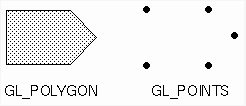
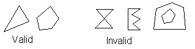

open_window();
for (i = 0; i < 1000000; i++) {
clear_the_window();
draw_frame(i);
wait_until_a_24th_of_a_second_is_over();
}
|
|
What is the problem with this algorithm? |
open_window_in_double_buffer_mode();
for (i = 0; i < 1000000; i++) {
clear_the_window();
draw_frame(i);
swap_the_buffers();
}
|
|
How does this remove the problem of the last algorithm? |
#include <GL/gl.h
#include <GL/glu.h
#include <GL/glx.h
#include "aux.h"
static GLfloat spin = 0.0;
void display(void)
{
glClear(GL_COLOR_BUFFER_BIT);
glPushMatrix();
glRotatef(spin, 0.0, 0.0, 1.0);
glRectf(-25.0, -25.0, 25.0, 25.0);
glPopMatrix();
glFlush();
glXSwapBuffers(auxXDisplay(), auxXWindow());
}
void spinDisplay(void)
{
spin = spin + 2.0;
if (spin 360.0)
spin = spin - 360.0;
display();
}
void startIdleFunc(AUX_EVENTREC *event)
{
auxIdleFunc(spinDisplay);
}
void stopIdleFunc(AUX_EVENTREC *event)
{
auxIdleFunc(0);
}
void myinit(void)
{
glClearColor(0.0, 0.0, 0.0, 1.0);
glColor3f(1.0, 1.0, 1.0);
glShadeModel(GL_FLAT);
}
void myReshape(GLsizei w, GLsizei h)
{
glViewport(0, 0, w, h);
glMatrixMode(GL_PROJECTION);
glLoadIdentity();
if (w <= h)
glOrtho (-50.0, 50.0, -50.0*(GLfloat)h/(GLfloat)w,
50.0*(GLfloat)h/(GLfloat)w, -1.0, 1.0);
else
glOrtho (-50.0*(GLfloat)w/(GLfloat)h,
50.0*(GLfloat)w/(GLfloat)h, -50.0, 50.0, -1.0, 1.0);
glMatrixMode(GL_MODELVIEW);
glLoadIdentity ();
}
int main(int argc, char** argv)
{
auxInitDisplayMode(AUX_DOUBLE | AUX_RGBA);
auxInitPosition(0, 0, 500, 500);
auxInitWindow(argv[0]);
myinit();
auxReshapeFunc(myReshape);
auxIdleFunc(spinDisplay);
auxMouseFunc(AUX_LEFTBUTTON, AUX_MOUSEDOWN, startIdleFunc);
auxMouseFunc(AUX_MIDDLEBUTTON, AUX_MOUSEDOWN, stopIdleFunc);
auxMainLoop(display);
}
glClearColor(0.0, 0.0, 0.0, 0.0);
glClear(GL_COLOR_BUFFER_BIT);
set_current_color(red);
draw_object(A);
draw_object(B);
set_current_color(green);
set_current_color(blue);
draw_object(C);
| Command | Color |
| glColor3f(0.0, 0.0, 0.0); | black |
| glColor3f(1.0, 0.0, 0.0); | red |
| glColor3f(0.0, 1.0, 0.0); | green |
| glColor3f(1.0, 1.0, 0.0); | yellow |
| glColor3f(0.0, 0.0, 1.0); | blue |
| glColor3f(1.0, 0.0, 1.0); | magenta |
| glColor3f(0.0, 1.0, 1.0); | cyan |
| glColor3f(1.0, 1.0, 1.0); | white |
glBegin(GL_POLYGON); glVertex2f(0.0, 0.0); glVertex2f(0.0, 3.0); glVertex2f(3.0, 3.0); glVertex2f(4.0, 1.5); glVertex2f(3.0, 0.0); glEnd();

| Value | Meaning |
| GL_POINTS | individual points |
| GL_LINES | pairs of vertices interpreted as individual line segments |
| GL_POLYGON | boundary of a simple, convex polygon |
| GL_TRIANGLES | triples of vertices interpreted as triangles |
| GL_QUADS | quadruples of vertices interpreted as four-sided polygons |
| GL_LINE_STRIP | series of connected line segments |
| GL_LINE_LOOP | same as above, with a segment added between last and first vertices |
| GL_TRIANGLE_STRIP | linked strip of triangles |
| GL_TRIANGLE_FAN | linked fan of triangles |
| GL_QUAD_STRIP | linked strip of quadrilaterals |
| Command | Purpose of command |
| glVertex*() | set vertex commands |
| glColor*() | set current color |
| glIndex*() | set current color index |
| glNormal*() | set normal vertex coordinates |
| glEvalCoord*() | generate coordinates |
| glCallList(), glCallLists() | execute display list(s) |
| glTexCoord*() | set texture coordinates |
| glEdgeflag*() | control drawing of edges |
| glMaterial*() | set material properties |
#define PI 3.1415926535897
Glint circle_points = 100;
glBegin(GL_LINE_LOOP);
for (I = 0;I < circle_points; I++) {
angle = 2 * PI * I /circle_points;
glVertex2f(cos(angle), sin(angle));
}
glEnd();

glPolygonMode(GL_FRONT, GL_FILL);
glPolygonMode(GL_BACK, GL_LINE);
Copyright © 1999-2000, Thomas D. Citriniti, citrit@rpi.edu
ECSE Dept., Rensselaer Polytechnic Inst., Troy NY, 12180 USA